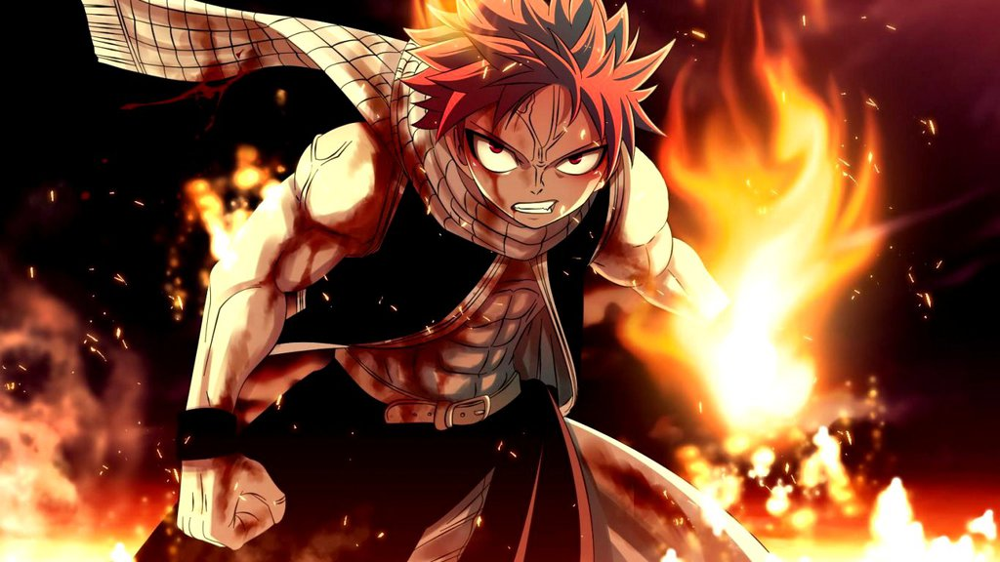

<!DOCTYPE html>
<html lang="en">
<head>
    <!-- Page Title -->
<title> Anime Days </title>
    <meta charset="utf-8"> 
    <meta name="viewport" content="width=device-width, initial-scale=1">
  <link rel="stylesheet" href="http://maxcdn.bootstrapcdn.com/bootstrap/3.3.5/css/bootstrap.min.css">
  <script src="https://ajax.googleapis.com/ajax/libs/jquery/1.11.3/jquery.min.js"></script>
  <script src="http://maxcdn.bootstrapcdn.com/bootstrap/3.3.5/js/bootstrap.min.js"></script>
  </head>
</html>

<Center>

<h1>Anime Days</h1>
</Center>
<!-- Background Music-->
<audio autoplay>
<source src="dbz.ogg" type="audio/ogg">
<source src="dbz.mp3" type="audio/mpeg">
</audio>

     <!-- Collect the nav links for toggling -->
<body>
<nav class="navbar navbar-inverse">
  <div class="container-fluid">
    <div class="navbar-header">
    </div>
    <div>
      <ul class="nav navbar-nav">
        <li class="active"><a href="index.html">Home</a></li>
        <li><a href="listings.html">Anime Listings</a> </li>
        <li><a href="contact.html">Contact Us</a></li>
      </ul>
      <!--Adds Sign Up and Log In buttons respectively to navbar -->
       <ul class="nav navbar-nav navbar-right">
        <li><a href="register.html"><span class="glyphicon glyphicon-user"></span> Sign Up</a></li>
        <li><a href="log.html"><span class="glyphicon glyphicon-log-in"></span> Login</a></li>
      </ul>
  </div>
</nav>

<!-- Create and Populate Table -->
<table border="2" bgcolor="#efefef">
	<tr>
		<th width="150 bgcolor="#cccccc">Title</th>
		<th>Action</th>
		<th>Horror</th>
		<th>Sci-Fi</th>
	</tr>
	<tr>
	<th>Claymore</th>
	<td>o</td>
	<td> </td>
	<td> </td>
	</tr>
	
	<tr>
	<th>Parasite The Maxim</th>
	<td> </td>
	<td>o</td>
	<td> </td>
	</tr>
	
	<tr>
	<th>Gundam</th>
	<td></td>
	<td></td>
	<td>o</td>
	</tr>
</table>

<hr />

<!--Content-->
<ul>
<strong>2010:</strong>
<li>Amagi SS
<li>Angel Beats
<li>Arakawa Under the Bridge
<li>B Gata H Kei
<li>Baka to Test to Shokaju
<li>Bakuman
<li>Black Butler (I, II)
<li>Dance in the Vampire Bund
<li>Durarara!!
<li>Fate/Stay Night
<li>Fortune Arterial
<li>Full Metal Alchemist : Brotherhood
<li>Hakuoki
<li>Highschool of the Dead
<li>House of Five Leaves
<li>Hykka Ryoran Samurai Girls
<li>Ichiban Ushiron no Dai Maou
<li>K-ON! (S. II)
<li>Katanagatari
<li>Ladies vs. Butlers!
<li>The Legend of the Legendary Heroes
<li>Mobile Suit Gundam Unicorn
<li>Nodame Cantabile
<li>Nura: Rise of the Yokai Clan
<li>Occult Academy
<li>Psychic Detective Yakumo
<li>Sengoku Basara (S. II)
<li>Shiki
<li>Sora no Otshimono (S. II)
<li>Star Driver
<li>Strike Witches
<li>Toaru Majutsu no Index
<li>Togainu no Chi
<li>The World Only God Knows
</ul>

<ul>
<strong>2009:</strong>
<li>07-Ghost
<li>11eyes: Tsumi to Batsu to Aganai no Shojo
<li>Aki Sora
<li>Akikan!
<li>Asura Cryin'
<li>Bakemonogatari
<li>Canaan
<li>Clannad
<li>Darker than Black: Ryusei no Gemini
<li>Eden of the East
<li>Eureka Seven
<li>Hatsukoi Limited
<li>Full Metal Alchemist
<li>Haruhi Suzumiya
<li>Hayate the Combat Butler (Season I, II)
<li>Higurashi no Naku Koro ni (Season I, II)
<li>InuYasha (They finally finished it q.q)
<li>K-On! (Season I, II)
<li>Kampfer
<li>Kara no Kyokai (All)
<li>Kobato
<li>Needless
<li>Pandora Hearts
<li>Princess Lover!
<li>Queen's Blade
<li>The Sacred Black Smith
<li>Sengoku Basara (Season I, II)
<li>Shakugan no Shana
<li>Sora no Otsohimono (Season I, II)
<li>Spice and Wolf (Season I, II, </3 where's season 3 q.q)
<li>Strike Witches
<li>Tears to Tiara
<li>To Aru Kagaku no Railgun
<li>Toaru Majutsu no Index (I, II)
<li>Winter Sonata
</ul>

<ul>
<strong>2008:</strong>
<li>Amatsuki
<li>Black Butler (Season I, II)
<li>Blade of the Immortal
<li>Blassreiter
<li>Darker than Black
<li>Detroit Metal City
<li>Ef (Melodies, Memories)
<li>The Familiar of Zero
<li>Gurren Lagann
<li>H2O: Footprints in the Sand
<li>Hell Girl
<li>Hyakko
<li>Kara no Kyoukai (All)
<li>Kurozuka
<li>Lucky Star
<li>Gundam 00
<li>Nodam Cantabile
<li>One Outs
<li>The Prince of Tennis (holy shit this was long)
<li>Rosario + Vampire (I, II)
<li>Special A
<li>Soul Eater
<li>Spice and Wolf (I, II)
<li>Strike Witches
<li>Toaru Majutsu no Index
<li>Toradora!
<li>True Tears
<li>Vampire Knight
<li>Xam'd: Lost Memories
</ul>

<ul>
<strong>2007:</strong>
<li>Aria
<li>Ayakashi
<li>Baccano!
<li>Clannad
<li>Claymore
<li>Ghost in the Shell (S.A.C.)
<li>Gurren Lagann
<li>Hayate the Combat Butler
<li>Heroic Age
<li>Higurashi
<li>Kaiji
<li>Kara no Kyoukai
<li>Kaze no Stigma
<li>Kiddy Grade
<li>Lucky Star
<li>Gundam 00
<li>Myself ; Yourself
<li>Romeo x Juliet
<li>School Days
<li>Shion no Ou
<li>Sword of the Stranger
</ul>

<ul>
<strong>2006:</strong>
<li>Air Gear</li>
<li>Ayakashi</li>
<li>Bartender</li>
<li>Black BLood Brothers</li>
<li>Black Jack</li>
<li>Black Lagoon (I, II)</li>
<li>Buso Renkin</li>
<li>Code Geas (I, II)</li>
<li>D. Gray-man</li>
<li>Death Note</li>
<li>Ergo Proxy</li>
<li>Fate/Stay Night</li>
<li>Ghost in the Shell</li>
<li>The Good Witch of the West</li>
<li>.hack</li>
<li>Honey and Clover</li>
<li>Innocent Venus</li>
<li>Gundam Seed (& Destiny)</li>
<li>Pumpkin Scissors</li>
<li>Rec</li>
<li>Welcome to the N.H.K.</li>
<li>Witchblade</li>
</ul>
 
<ul>
<strong>2005:</strong>
<li>Akagi</li>
<li>Basilisk</li>
<li>Blood+</li>
<li>Elfen Lied</li>
<li>Eyeshield 21</li>
<li>Gun x Sword</li>
<li>Saikano (q.q)</li>
<li>Ichigo 100%</li>
<ul>

<ul>
<strong>Other: I have no idea where these fit in the lists</strong>
<li>Naruto</li>
<li>One piece</li>
<li>Trigun</li>
<li>Dragon Ball (& GT, Z)</li>
<li>Black Cat</li>
</ul>

